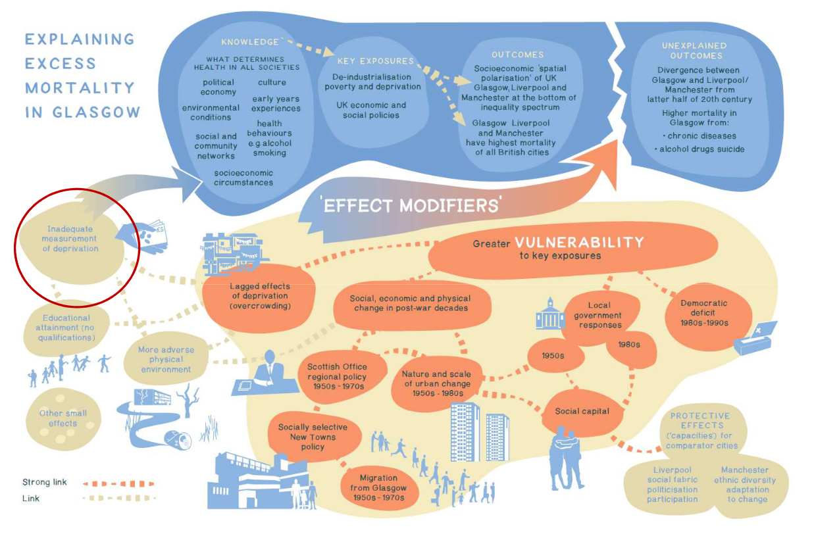

New job! I’m now a Y-PERN fellow, officially based in the Management School at Sheffield University, but mostly working with the South Yorkshire Combined Mayoral Authority (SYMCA, pronounced by folk who work there as ‘sim-ka’).
Y-PERN (“Yorkshire & Humber Policy Engagement and Research Network”) is a pretty unique project – Research England funded it specifically to strengthen the glue between Yorkshire and Humber’s universities and its local and mayoral authorities, building on a memorandum of understanding between them. The project itself doesn’t have traditional academic research questions or output requirements; the glue-strengthening is the whole point.
I’m one of eight (soon to be 11) policy fellows, and we’re kind of the glue, embedded in various local government bodies in Yorkshire and Humber. I’m regularly in SYMCA’s Sheffield office, working with them on specific projects. That experience has been fantastic – the level of daily collaboration is high. As one of the other fellows said, “The policy environment changes massively faster than academia,” making for a very different structure and pace. And SYMCA is full of incredibly smart and dedicated people – I’m feeling blessed to have a chance to work with them.
I’ve actually been in Y-PERN / SYMCA for several months, but only part time as I prototyped my way to a new work outcome, mixed with a few other freelance data science bits and bobs. But now that I’m fully Y-PERN, and getting stuck into some intense spatial economics goodness, it’ll be great to write/think about it all.
English Devolution (which will soon cover more than half of the English economy) is kindling a resurgence in fundamental economic and social questions, grounded in the places we live, asking how we can change those places for the better. To quote SYMCA’s Strategic Economic Plan (PDF):
We want to build a better economy, higher value and higher tech, more directly linked to the wellbeing of our population and planet, where people are more engaged and empowered to share in the fruits of their labour.
There’s some amazing work being done on how data can be used to support this, and gnarly issues around how evidence gets built into the machinery of governance. Work on inclusive economies has shown (LGA report) there’s no clear connection between raw GVA growth and disposable income growth. Others in, for example, the SIPHER project and Manchester’s inclusive growth analysis unit are asking exactly what role data and evidence can play in attacking spatial inequality(see this great spreadsheet put together by SIPHER that gathers several organisation’s inclusive economy measures into one place). This includes work with communities to create indicators that make sense to them, rather than simply imposing ones institutions prefer to work with (though there is of course still a need to use existing, robust national data sources).
Continuing the inclusive economies theme, there’s a recognition of the deep connection between all the economic and spatial determinants of health written into South Yorkshire’s Integrated Care Partnership health strategy, including the role of housing, employment and access to transport. That’s supported by a mature national data system – fingertips – that is not as well known as it should be, maybe due to its health focus. Because it covers “wider determinants”, it actually contains a huge swathe of the all the best social and economic data, with excellent APIs and R/Python packages, and is the foundation for this epic piece of analysis (word doc download) that supports South Yorkshire’s health strategy.
The image below is a summary of work done to understand what underpins the alleged “Glasgow effect”, from a presentation (second from the bottom on that page) by Dr. David Walsh of the Glasgow Centre for Population Health. I find it a really effective reminder not only the complexity of the economics/health connection, but also the vital importance of understanding a place’s history. Different kinds of data can act as individual lenses, with their own distortions and blind spots – but data alone isn’t insight. We have to piece that together from as many knowledge sources as we can, including learning how past events led us to where we are.

The same is true for understanding how spatial economics underpins thriving (or struggling) places. As I tried to get across in our energy policy paper, there’s still a lot we don’t fully understand about how the wiring of spatial economies work – again, with data and theory giving only partial glimpses of the reality – and yet the issues we face are as intense as they’ve ever been, with a cost of living crisis and pandemic recovery piled on top of trying to figure out how to rewire spatial economies for zero carbon. Definitive answers are unlikely to be imminent; that paper stole an old Zapatista saying: we have to ‘walk asking‘.
So we need things to ask while we walk, and one of my favourite ways to find fresh questions has always been… old books. They’re full of the best questions – it’s just that they tend to drop out of fashion rather than ever be resolved. Everything circles round. I was reminded of this after my first visit to the incredible, labyrinthine Scarthin Books in Cromford recently. The shop left me no choice but to buy a bunch of old economics books… In Peter Donaldson’s populariser, ‘a Guide to the British Economy’ (1971), he notes that faith in nineteenth century laissez-faire economics was shattered in the 1930s depression, before saying:
Economics today is more interesting than ever before, because we now realise that the economy is neither an automatic mechanism which can safely be left to chug smoothly along its own optimal path, nor governed by blind and unpredictable forces over which we can have no control. Its proper behaviour can only be secured by deliberate manipulation, and developments in economic theory have indicated some of the basic techniques necessary for this purpose.
Of course, things took a rather different course later in the 70s… but we find ourselves asking the same questions again. What level of control do we have? What levers do we have? Can we make new levers regionally, locally? How? What role can and do data and evidence play in all this? Questions of some practical importance as well as theoretical intrigue, but in the meantime, there’s some actual nuts and bolts spatial economic data analysis to be done – hopefully I can write about that in more detail soon.
And more ramblings to come about the questions. This post looks at some of those ideas that Donaldson thought had died, resurfacing in the 70s and still swirling about in odd places, if of interest – note how it connects to evidence-based decision making (all the stuff about ‘planners promising utopias’).
Oh and p.s. – check out Alfred Marshall’s excellent list of questions for economics from 1895; how many of those have been resolved versus just gone out of fashion?